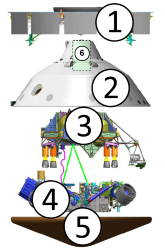
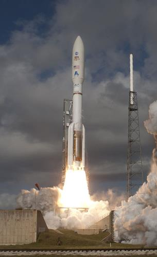
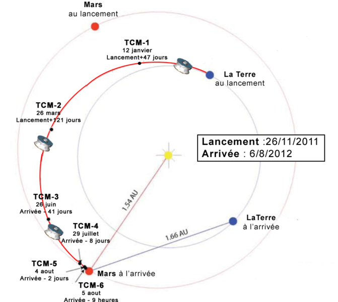
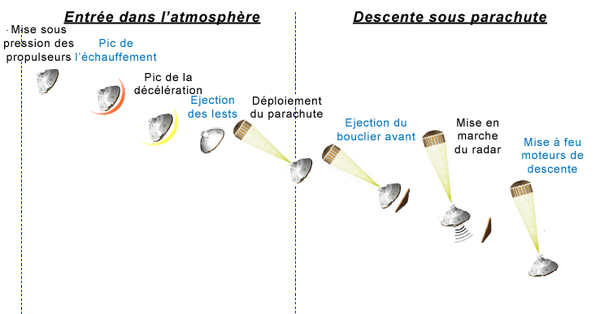

La Mission Laboratoire scientifique pour Mars
Détails de la mission:
| Organisation |
NASA |
| Lanceur |
Atlas V 541 |
| Rover |
Curiosity |
| Lancement |
26 novembre 2011 |
| Début de la mission |
6 août 2012 |
| Identifiant SATCAT |
37936 |
| Identifiant COSPAR |
2011-070A |
|
|
Objectifs:
- Determiner la quantité et les types de composé organiques présents sur la planète.
- Examiner les composés chimiques permettant la vie.
- Indentifier les biosignatures.
- Examiner la composition chimique de la surface martienne.
- Examiner les processus geologiques.
- Évaluer l'évolution de l'atmosphere.
- Déterminer la présence de cycles d'eau et de dioxyde de carbone.
- Analyser la composition du rayonnement de surface.
Caractéristiques techniques de la sonde spatiale MSL:
| Composant |
Masse (kg) |
# |
 |
| Étage de croisière |
539 |
1 |
| Véhicule de rentrée |
731 |
2, 5 |
| Étage de descente |
1219 |
3 |
| Rover Curiosity |
899 |
4 |
| Parachute |
|
6 |
Lancement, transit, descente et atterrissage |

Le lanceur Atlas V décolle le 26 novembre 2011 de Cap Canaveral avec la sonde spatiale MSL.
|

Déroulement du transit entre la Terre et Mars avec les corrections de trajectoire intermédiaires.
|
|

|
| La descente sous parachute. |

|
| Phase finale de la descente et atterrissage. |
{kind=link}
{kind=link}
{kind=link}
{kind=link}